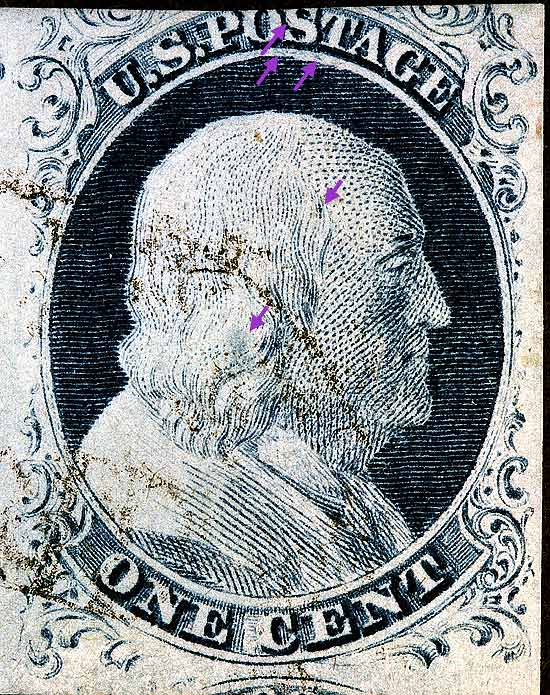
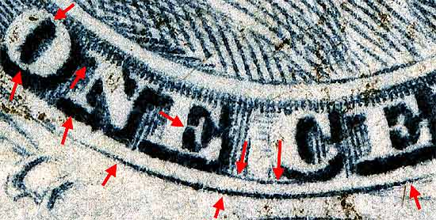
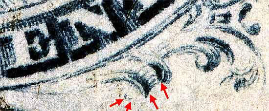
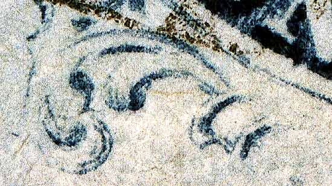

1¢ Franklin Issue of 1851-1857, PLATE 1 LATE. Pos 8R1L, (Scott #9) |
| Scott #9, Blue, Type IV, Relief T Issued both imperforate and perforated. Perforated copies are more scarce. DOUBLE TRANSFER, Only positions 2, 3, 8 and, 10 of the RIGHT pane have DOUBLE RECUT bottom curved lines. This can be an aid to plating top row positions of this pane. Part of 7R1L and 8R1L pair. The violet arrows are marks of note not indicated on the Ashbrook diagrams. |
|  |
| Figure 1. (BELOW) Detail view of the DOUBLE RECUT BOTTOM lines.  |
| Figure 2. Detail view of plating marks in the lower right quadrant of this position. The remains of the right scroll ball and plume can be seen.
 |
| Figure 3. (BELOW) Detail view of left plume.
 |
| DISCLAIMER and COPYRIGHT INFORMATION: Thanks for visiting this site. I hope you learn something new as we are making new discoveries all the time. You, the visitor, have my permission to link to my pages and to share the INFORMATION with others. The images themselves fall under the fair use guidelines established by the United States Congress and Copyright law. Basically contact us before using. I also ask in return that you send me an e-mail if I have made a mistake, or have made some other technical blunder that in my rush to put these pages up would cause the visitor confusion. Please also visit my other website at www.slingshotvenus.com. and support the live music arts. While your there, be sure to purchase our music. There are not many philatelic rock stars around and we need all the help we can get. :-) I can be reached at: nerdman@ix.netcom.com |